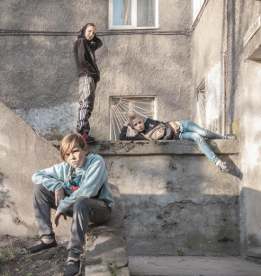

Novosibirsk
29/06/2019

American photographer, freelancer and photojournalist. His photo Afghan Girl, of a girl with piercing green eyes, has appeared on the cover of National Geographic several times. McCurry is the recipient of numerous awards, including Magazine Photographer of the Year, awarded by the National Press Photographers Association; the Royal Photographic Society's Centenary Medal and two first-place prizes in the World Press Photo conte
Two Boys & The Sea
24/12/29
Two Boys & The Sea
24/12/29
Two Boys & The Sea
24/12/29